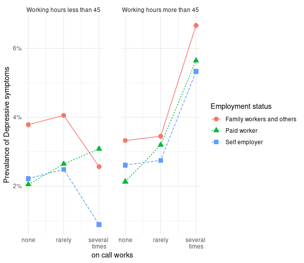
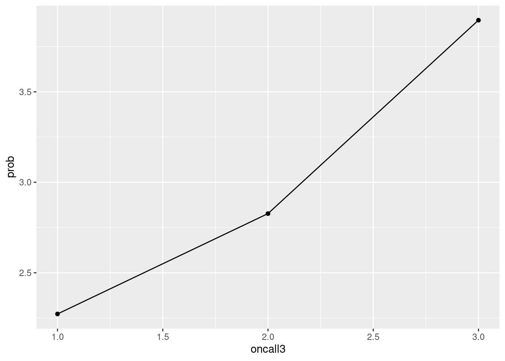
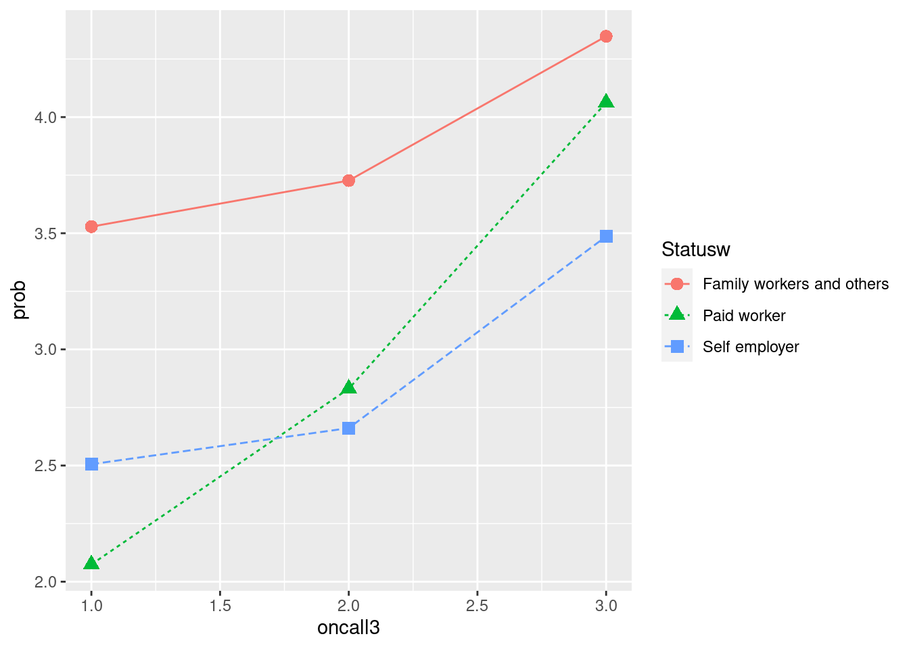
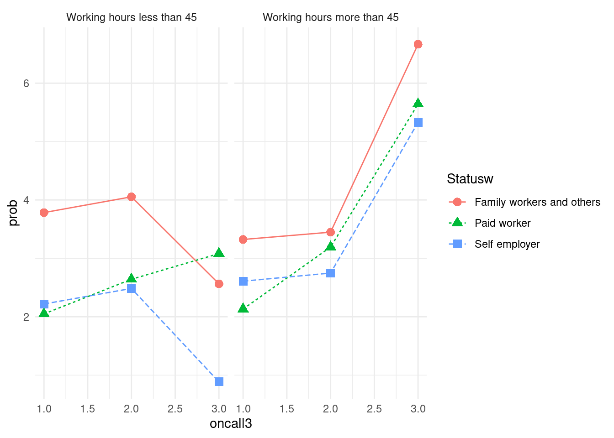
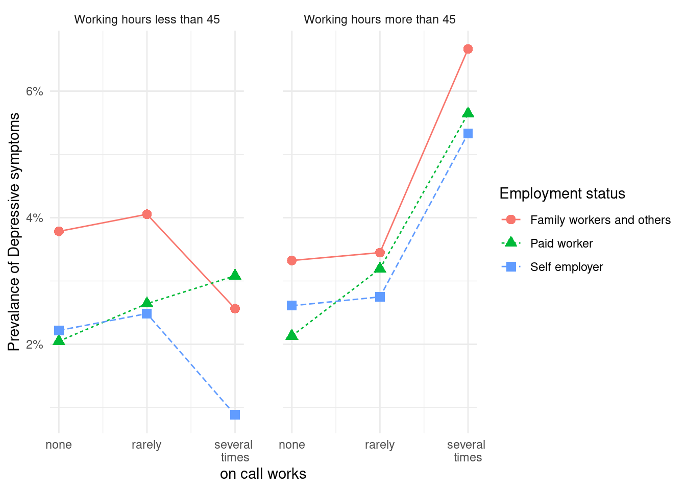
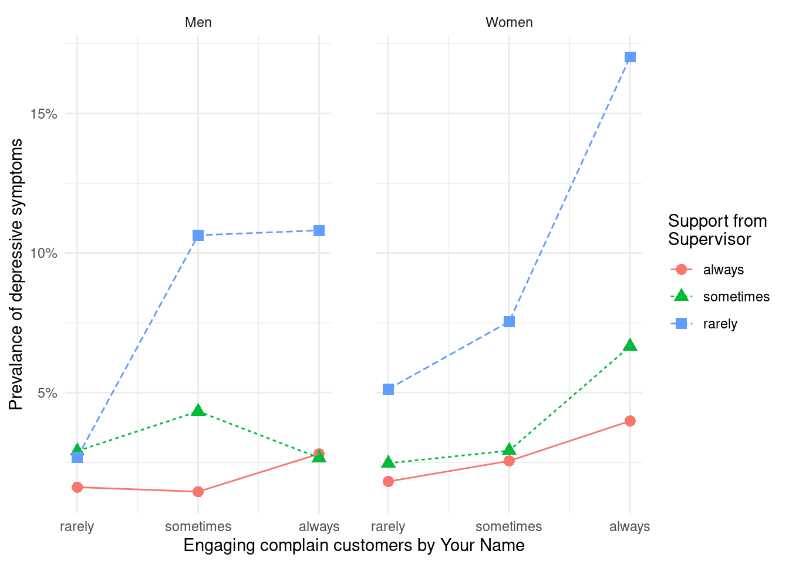

rm(list=ls())
#basic requirment
if(!require("tidyverse")) install.packages("tidyverse")
if(!require("htmlTable")) install.packages("htmlTable")
if(!require("broom")) install.packages("broom")
if(!require("labelled")) install.packages("labelled")
# packages from github
if(!require("devtools")) install.packages("devtools")
if(!require("ggplot2")) install.packages("ggplot2")
if(!require("plot3D")) install.packages("plot3D")
library(devtools)
if(!require("tabf")) install_github("jinhaslab/tabf", force = TRUE, quiet = TRUE)
library(tabf)10 근로환경조사를 이용한 시각화 실습
10.1 install package from github
tidyvere and htmlTable, and broom 가 데이터를 변환하고 표시하는데 자주 사용됩니다. devtools 은 “github”에 있는 함수를 불러오는데 사용됩니다.
install_github 을 통해 패키지를 설치하겠습니다.
10.2 데이터 준비
kwcs5th.rds
자신의 folder에 data 라는 folder가 있는지 확인하십시오. data라는 폴더에 다운로드하고, 불러오도록 하겠습니다.
url.data <- "https://raw.githubusercontent.com/jinhaslab/opendata/main/kwcs/kwcs5th.rds"
download.file(url.data, "data/kwcs5th.rds")a = readRDS("data/kwcs5th.rds")데이터에서 필요한 자료를 불러오고 변환하겠습니다.
kwcs5th 설문지
# 근로환경조사 5차
# 변수생성: 온콜 여부/빈도, 우울, 연령, 성별, 교육, 근무시간, 종사상지위, 고용형태, 소득#
a0<-a %>%
select(Q35, AGE, TSEX, TEF1, Q22_1, Q05, Q06, EF11, EF12, Q69,Q62_1_8, Q35, # 기존 실습
Q16_1, Q26_7, Q26_8, Q49_15, Q49_2, Q49_1) # 새로 추가된 실습과제
# 변수 구획 정하기 ------
Wh_breaks <- c(-Inf, 35, 45, 55, 65, Inf)
Wh_labels <- c('<35','35-44','45-54','55-64','>=65')
inc_break <- c(-Inf, 100, 200, 300, 400, Inf)
inc_label <- c('<100', '100-199', '200-299', '300-399', '>400')
# 데이터 step ------
a1 <-a0 %>%
filter(AGE <65 ) %>%
filter(!is.na(Q22_1)) %>%
filter(!TEF1 == 9) %>%
filter(!Q69 == 9) %>%
filter(!Q62_1_8 == 9) %>%
mutate(oncall = Q35) %>%
mutate(oncallgp = ifelse(oncall %in% c(1, 2, 3), "on call", "non-on call")) %>%
mutate(oncallgp3 = ifelse(oncall %in% c(1,2,3), "several times a month",
ifelse(oncall %in% c(4), "rarely", "none"))) %>%
mutate(oncallgp3 = factor(oncallgp3,
levels=c("none", "rarely", "several times a month")))%>%
mutate(agegp = ifelse(AGE <30, '<30',
ifelse(AGE <40, '30-49',
ifelse(AGE <50, '40-49',
ifelse(AGE < 60, '50-59', '≥60'))))) %>%
mutate(Wh=cut(Q22_1, breaks=Wh_breaks, include.lowest=TRUE, right=FALSE,
labels=Wh_labels)) %>%
mutate(Wh=structure(Wh, label='Working hours')) %>%
mutate(Gender=factor(TSEX, levels=c(1,2), labels=c('Men', 'Women') )) %>%
mutate(Education=factor(TEF1, levels=c(1,2,3,4),
labels=(c('Primary', 'Middle', 'High', 'University')))) %>%
mutate(Statusw=ifelse(Q05 %in% c(1,2), 'Self employer',
ifelse(Q05 %in% c(3), 'Paid worker',
'Family workers and others'))) %>%
mutate(inc1=ifelse(EF11 <10000, EF11, ifelse(EF12<10, EF12*100-50, NA) )) %>%
mutate(inc=cut(inc1, breaks=inc_break, labels=inc_label)) %>%
mutate(job_st = factor(Q69, levels = c(1:4),
labels = c("Very satisfied", "Satisfied", "Unsatisfied", "Very unsatisfied"))) %>%
mutate(job_st = structure(job_st, label = 'Job Satisfaction')) %>%
mutate(depression = Q62_1_8)%>%
mutate(depression = structure(factor(depression, levels=c(1, 2),
labels=c("Depression", "Non depression")))) 10.3 실습 자료 시각화
이 데이터를 이용해서 다음과 같은 그래프를 그려보려고 합니다. 저번 시간에 oncall 의 횟수가 늘어나면 우울할 오즈비가 증가하는 것을 표로 나타a내었는데요, 그래프를 보면 주 45시간 미만이면서 자영업과 가족종사자에서는 그렇지 않은 반면에, 장시간 근로자에서는 oncall 이 늘어날 수록 우울해 지는 것을 볼 수 있습니다. 왜 그럴까요? 라는 질문이 저절로 나오게 됩니다. 이처럼 그래프를 통해 변화되는 양상을 보여주는 것은 데이터의 속성을 탐구하게 만드는 원동력이 되고는 합니다. 따라서 데이터를 탐구할 때 그래프를 이용해 소통하는 작업을 자주 하는 것이 좋습니다.

우선 oncallgp3는 명목변수여서 그래프를 그리기 어렵습니다. 따라서 해당하는 연속변수를 만들어서 그래프를 그리겠습니다. 또한 장시간 근무를 45시간을 기준으로 (주 40시간이 기준이고, 하루 한시간 정도 추가 근무를 하면 45시간이 됩니다.)
a2<- a1 %>%
mutate(oncall3 = case_when(
oncall %in% c(1,2, 3) ~ 3, # several times a month
oncall %in% c(4) ~ 2, # rarely
TRUE ~ 1 # none
)) %>%
mutate(lwh = ifelse(Q22_1 > 45, 2, 1)) %>%
mutate(lwhf = factor(lwh, levels = c(1,2),
labels = c("Working hours less than 45",
"Working hours more than 45")))oncall별 우울감이 얼마나 있는지 계산해 보겠습니다. 우선 전체 4만여명 중에 1006명이 우울감을 호소하고 있습니다.
a2 %>%
group_by(depression) %>%
count() # A tibble: 2 × 2
# Groups: depression [2]
depression n
<fct> <int>
1 Depression 1006
2 Non depression 40583그렇다면 group_by()에 oncall3를 넣고 count에 depression을 넣어 온콜에 따른 우울감 분율을 계산해 보겠습니다.
a2 %>%
group_by(oncall3) %>%
count(depression)# A tibble: 6 × 3
# Groups: oncall3 [3]
oncall3 depression n
<dbl> <fct> <int>
1 1 Depression 773
2 1 Non depression 33244
3 2 Depression 164
4 2 Non depression 5637
5 3 Depression 69
6 3 Non depression 1702이때 그래프를 그리기 위해 필요한 것은 Depression은 분율 또는 prevalance입니다. group별 우울감 여부 (n)을 group별 총 명수 (sum(n))으로 나누면 1번 집단은 773/(773+33244)의 크기로 우울감 유병율이 나타나게 됩니다.
a2 %>%
group_by(oncall3) %>%
count(depression) %>%
mutate(prob = n/sum(n)*100)# A tibble: 6 × 4
# Groups: oncall3 [3]
oncall3 depression n prob
<dbl> <fct> <int> <dbl>
1 1 Depression 773 2.27
2 1 Non depression 33244 97.7
3 2 Depression 164 2.83
4 2 Non depression 5637 97.2
5 3 Depression 69 3.90
6 3 Non depression 1702 96.1 다만 그래프를 그릴때 사용되는 것은 우울감의 유병율이므로 filter 를 통해 depression 변수의 변수값이 Depression일 때만을 사용하도록 하겠습니다.
a2 %>%
group_by(oncall3) %>%
count(depression) %>%
mutate(prob = n/sum(n)*100) %>%
filter(depression == 'Depression')# A tibble: 3 × 4
# Groups: oncall3 [3]
oncall3 depression n prob
<dbl> <fct> <int> <dbl>
1 1 Depression 773 2.27
2 2 Depression 164 2.83
3 3 Depression 69 3.90이제 oncall3의 1, 2, 3을 x-축에, prob(우울감 유병률)을 y-축에 위치시키고 그림을 그리겠습니다. 그림은 ggplot2 라이브러리를 이용하겠습니다. 이것이 가장 기본적인 그래프 그리기입니다. aes안에는 x, y축을 담당하고 데이터의 기본 가정에 해당하는 것을 적어 놓습니다. geom_* 뒤에는 표현 방식에 대한 부분을 넣습니다. geom_line은 선차트, geom_point 산점차트를 그린다는 것입니다.
a2 %>%
group_by(oncall3) %>%
count(depression) %>%
mutate(prob = n/sum(n)*100) %>%
filter(depression == 'Depression') %>%
ggplot(aes(x = oncall3, y = prob)) +
geom_point()+
geom_line()
우리는 이제 데이터에 내포된 의미를 찾기 위해 고용형태에 따른 oncall과 우울간의 관계를 그려보고자 합니다. 따라서 group_by( )에 고용형태 변수를 넣어 같은 그림을 그려봅니다. 상기 그래프에서 color, shape, linetype을 고용형태에 따라 다르게 해달라고 표신한 부분을 확인해 주세요.
a2 %>%
group_by(oncall3, Statusw) %>%
count(depression) %>%
mutate(prob = n/sum(n)*100) %>%
filter(depression == 'Depression') %>%
ggplot(aes(x = oncall3, y = prob)) +
geom_point(aes(color = Statusw, shape = Statusw), size =3) +
geom_line(aes(color = Statusw, linetype = Statusw)) 
이번에는 그래프를 둘로 나눌 것입니다. 하나는 45시간 이하 근무자, 다른 하나는 45시간 초과 근무자로 나눌 것입니다. 그래프는 facet_wrap()를 이용하고 그 안에 lwhf~.는 근무시간에 따라 나누어 그리라는 뜻입니다. color부분은 중복되니 맨 처음에 group = Statusw 를 color = Statusw로 바꾸겠습니다.
a2 %>% group_by(oncall3, Statusw, lwhf) %>%
count(depression) %>%
mutate(prob = n/sum(n)*100) %>%
filter(depression == 'Depression') %>%
ggplot(aes(x= oncall3, y = prob, color = Statusw)) +
geom_point(aes(shape = Statusw), size =3) +
geom_line(aes(linetype = Statusw)) +
theme_minimal() +
facet_wrap(lwhf~.)
x 축을 none, rarely, several times로 바꾸고, y축은 % 단위로 바꾸며, 두 그래프 사이를 2칸 띄우는 방식을 도입해 그래프를 마무리 하도록 하겠습니다.
a2 %>% group_by(oncall3, Statusw, lwhf) %>%
count(depression) %>%
mutate(prob = n/sum(n)*100) %>%
filter(depression == 'Depression') %>%
ggplot(aes(x= oncall3, y = prob, color = Statusw)) +
geom_point(aes(shape = Statusw), size =3) +
geom_line(aes(linetype = Statusw)) +
theme_minimal() +
facet_wrap(lwhf~.) +
labs(color = 'Employment status',
shape = 'Employment status',
linetype = 'Employment status') +
xlab("on call works") + ylab("Prevalance of Depressive symptoms") +
scale_x_continuous(breaks = c(1, 2, 3),
labels = c('1' = 'none',
'2' = 'rarely',
'3' = 'several \ntimes')) +
scale_y_continuous(labels = function(x) paste0(x, "%"))+
theme(panel.spacing = unit(2, "lines")) 
10.4 시각화 과제 1
이번에는 고객 대면 근로자가 화난 고객을 상대함에 있어서, 상사와 동료의 지지가 어떠한 보호 효과를 보이는지 그래프를 그려보도록 하겠습니다. 저번 실습자료에 이번 과제에서 사용될 변수인 감정노동, 동료의지지, 상사의지지를 추가하겠습니다.
| 변수 | 설명 |
|---|---|
| Q26_7 | 서비스직, 대면 근로자 |
| Q26_9 | 화난 고객 대응 근로자 |
| Q49_15 | 일하면서 감정숨김 |
| Q49_2 | 상사의 지지적 문화 |
| Q49_1 | 동료의 지지적 문화 |
em <- a %>%
select(Q35, AGE, TSEX, TEF1, Q22_1, Q05, Q06, EF11, EF12, Q69,Q62_1_8, Q35, # 기존 실습
Q16_1, Q26_7, Q26_8, Q49_15, Q49_2, Q49_1, KQ50) %>%
filter(Q16_1 >=1, Q26_7 <7, Q26_8 <=7, Q49_15 <=3,
KQ50<9, Q49_2 <7, Q49_1<7) %>% # 새로 추가된 실습 과제 변수
mutate(agegp = ifelse(AGE <30, '<30',
ifelse(AGE <40, '30-49',
ifelse(AGE <50, '40-49',
ifelse(AGE < 60, '50-59', '≥60'))))) %>%
mutate(Wh=cut(Q22_1, breaks=Wh_breaks, include.lowest=TRUE, right=FALSE,
labels=Wh_labels)) %>%
mutate(Wh=structure(Wh, label='Working hours')) %>%
mutate(Gender=factor(TSEX, levels=c(1,2), labels=c('Men', 'Women') )) %>%
mutate(Education=factor(TEF1, levels=c(1,2,3,4),
labels=(c('Primary', 'Middle', 'High', 'University')))) %>%
mutate(Statusw=ifelse(Q05 %in% c(1,2), 'Self employer',
ifelse(Q05 %in% c(3), 'Paid worker',
'Family workers and others'))) %>%
mutate(inc1=ifelse(EF11 <10000, EF11, ifelse(EF12<10, EF12*100-50, NA) )) %>%
mutate(inc=cut(inc1, breaks=inc_break, labels=inc_label)) %>%
mutate(job_st = factor(Q69, levels = c(1:4),
labels = c("Very satisfied", "Satisfied", "Unsatisfied", "Very unsatisfied"))) %>%
mutate(job_st = structure(job_st, label = 'Job Satisfaction')) %>%
mutate(depression = Q62_1_8)%>%
mutate(depression = structure(factor(depression, levels=c(1, 2),
labels=c("Depression", "Non depression")))) %>%
mutate(servieworker=Q26_7) %>%
mutate(angergp=ifelse(Q26_8 %in% c(1,2,3), 3,
ifelse(Q26_8 %in% c(4, 5), 2, 1))) %>%
mutate(angergp2=ifelse(Q26_8 %in% c(1,2,3), 'always',
ifelse(Q26_8 %in% c(4, 5), 'sometimes', 'rarely'))) %>%
mutate(angergp2 = factor (angergp2, levels = c('rarely', 'sometimes', 'always'))) %>%
mutate(suppressiongp=ifelse(Q49_15 %in% c(1,2,3), 1, 0)) %>%
mutate(suppressiongp2=ifelse(Q49_15 %in% c(1,2), 'always',
ifelse(Q49_15 %in% c(3), 'sometimes', 'rarely'))) %>%
mutate(support_sup=ifelse(Q49_2 %in% c(1,2), 'always',
ifelse(Q49_2 %in% c(3), 'sometimes', 'rarely')),
support_col=ifelse(Q49_1 %in% c(1,2), 'always',
ifelse(Q49_1 %in% c(3),'sometimes', 'rarely')))%>%
mutate(support_sup=factor(support_sup, levels=c('always', 'sometimes', 'rarely')),
support_col=factor(support_col, levels=c('always', 'sometimes', 'rarely'))) %>%
mutate(support_sup2=ifelse(Q49_2 %in% c(1,2, 3), '> sometimes', 'rarely'),
support_col2=ifelse(Q49_1 %in% c(1,2, 3), '> sometimes', 'rarely')) %>%
mutate(support_sup2=factor(support_sup2, levels=c('> sometimes', 'rarely')),
support_col2=factor(support_col2, levels=c('> sometimes', 'rarely'))) %>%
filter(!is.na(depression))상기 자료를 통해 아래의 그래프를 그리시오
